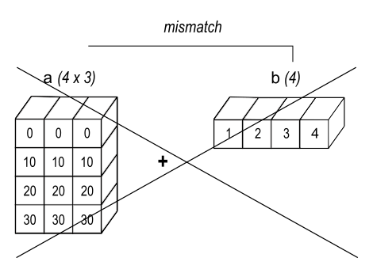

<!DOCTYPE html>


<html lang="zh-CN">


<head>
  <meta name="baidu-site-verification" content="codeva-NSg7ynviLa" />
  <meta charset="utf-8" />
    
  <meta name="viewport" content="width=device-width, initial-scale=1, maximum-scale=1" />
  <title>
    numpy广播规则 |  
  </title>
  <meta name="generator" content="hexo-theme-ayer">
  
  <link rel="shortcut icon" href="/images/mojie.jpg" />
  
  
<link rel="stylesheet" href="/dist/main.css">

  <link rel="stylesheet" href="https://cdn.jsdelivr.net/gh/Shen-Yu/cdn/css/remixicon.min.css">
  
<link rel="stylesheet" href="/css/custom.css">

  
  <script src="https://cdn.jsdelivr.net/npm/pace-js@1.0.2/pace.min.js"></script>
  
  

  

<link rel="alternate" href="/atom.xml" title="null" type="application/atom+xml">
</head>

</html>

<body>
  <div id="app">
    
      
    <main class="content on">
      <section class="outer">
  <article
  id="post-numpy广播规则"
  class="article article-type-post"
  itemscope
  itemprop="blogPost"
  data-scroll-reveal
>
  <div class="article-inner">
    
    <header class="article-header">
       
<h1 class="article-title sea-center" style="border-left:0" itemprop="name">
  numpy广播规则
</h1>
 

    </header>
     
    <div class="article-meta">
      <a href="/posts/315c0f08/" class="article-date">
  <time datetime="2026-08-22T12:42:08.000Z" itemprop="datePublished">2026-08-22</time>
</a>   
<div class="word_count">
    <span class="post-time">
        <span class="post-meta-item-icon">
            <i class="ri-quill-pen-line"></i>
            <span class="post-meta-item-text"> 字数统计:</span>
            <span class="post-count">1.2k</span>
        </span>
    </span>

    <span class="post-time">
        &nbsp; | &nbsp;
        <span class="post-meta-item-icon">
            <i class="ri-book-open-line"></i>
            <span class="post-meta-item-text"> 阅读时长≈</span>
            <span class="post-count">5 分钟</span>
        </span>
    </span>
</div>
 
    </div>
      
    <div class="tocbot"></div>


  
    <div class="article-entry" itemprop="articleBody">
       
  <p>解释一下 numpy 广播规则，这是一个之前很容易混淆的点，而且很多资料我感觉完全没解释清楚。</p>
<span id="more"></span>
<h1 id="广播规则">广播规则</h1>
<p>结合官方网址（网址1）的资料和 AI 的解释，我整理的一般的广播规则如下（和官网意思一下，我觉得下面这样写更好理解）</p>
<ol type="1">
<li>如果两个数组的维度数不同，将维度较小的那个数组的形状在<strong>前面</strong>（左边）补1，直到两数组维度相同。</li>
<li>对于每个维度，从最右边的维度开始比对，<strong>如果两数组在该维度上的大小相等，或者其中一个数组在该维度上的大小为1</strong>，则这两个数组在该维度上是兼容的。</li>
<li>如果两个数组在所有维度上都兼容，则它们可以广播。</li>
<li>广播后，每个数组的形状将取两个数组在每个维度上的最大值。</li>
<li>在任何一个维度上，如果一个数组的大小为1，而另一个大于1，则将该维度大小为1的数组拉伸（复制）到与另一个数组相同的大小。</li>
</ol>
<p>如果不能广播，则会给出下面的报错提示</p>
<figure class="highlight python"><table><tr><td class="gutter"><pre><span class="line">1</span><br></pre></td><td class="code"><pre><span class="line">ValueError: operands could <span class="keyword">not</span> be broadcast together</span><br></pre></td></tr></table></figure>
<p>例如，如果你有一个 256×256×3 的 RGB 值数组，并希望将图像中每个颜色分别按不同值进行缩放，你可以将图像乘以一个包含三个值的一维数组。根据广播规则对这些数组的后向轴大小进行对齐后，可以看出它们是兼容的：</p>
<figure class="highlight plaintext"><table><tr><td class="gutter"><pre><span class="line">1</span><br><span class="line">2</span><br><span class="line">3</span><br></pre></td><td class="code"><pre><span class="line">Image  (3d array): 256 x 256 x 3</span><br><span class="line">Scale  (1d array):             3</span><br><span class="line">Result (3d array): 256 x 256 x 3</span><br></pre></td></tr></table></figure>
<p>当比较的两个维度中有一个为1时，就使用另一个维度。换句话说，大小为1的维度会被拉伸或“复制”以匹配另一个。</p>
<p>在以下示例中，数组A和B的轴长度均为1，在广播操作期间被扩展为更大的尺寸：</p>
<figure class="highlight plaintext"><table><tr><td class="gutter"><pre><span class="line">1</span><br><span class="line">2</span><br><span class="line">3</span><br></pre></td><td class="code"><pre><span class="line">A      (4d array):  8 x 1 x 6 x 1</span><br><span class="line">B      (3d array):      7 x 1 x 5</span><br><span class="line">Result (4d array):  8 x 7 x 6 x 5</span><br></pre></td></tr></table></figure>
<h1 id="更多例子">更多例子</h1>
<p>1d数组 和 2d数组的广播举例如下</p>
<figure class="highlight python"><table><tr><td class="gutter"><pre><span class="line">1</span><br><span class="line">2</span><br><span class="line">3</span><br><span class="line">4</span><br><span class="line">5</span><br><span class="line">6</span><br></pre></td><td class="code"><pre><span class="line">a = np.array([[ <span class="number">0.0</span>,  <span class="number">0.0</span>,  <span class="number">0.0</span>],</span><br><span class="line">              [<span class="number">10.0</span>, <span class="number">10.0</span>, <span class="number">10.0</span>],</span><br><span class="line">              [<span class="number">20.0</span>, <span class="number">20.0</span>, <span class="number">20.0</span>],</span><br><span class="line">              [<span class="number">30.0</span>, <span class="number">30.0</span>, <span class="number">30.0</span>]])</span><br><span class="line">b = np.array([<span class="number">1.0</span>, <span class="number">2.0</span>, <span class="number">3.0</span>])</span><br><span class="line">a + b</span><br></pre></td></tr></table></figure>
<p>输出为</p>
<figure class="highlight plaintext"><table><tr><td class="gutter"><pre><span class="line">1</span><br><span class="line">2</span><br><span class="line">3</span><br><span class="line">4</span><br></pre></td><td class="code"><pre><span class="line">array([[  1.,   2.,   3.],</span><br><span class="line">        [11.,  12.,  13.],</span><br><span class="line">        [21.,  22.,  23.],</span><br><span class="line">        [31.,  32.,  33.]])</span><br></pre></td></tr></table></figure>
<p>一个错误例子为</p>
<figure class="highlight python"><table><tr><td class="gutter"><pre><span class="line">1</span><br><span class="line">2</span><br></pre></td><td class="code"><pre><span class="line">b = np.array([<span class="number">1.0</span>, <span class="number">2.0</span>, <span class="number">3.0</span>, <span class="number">4.0</span>])</span><br><span class="line">a + b</span><br></pre></td></tr></table></figure>
<p>报错信息为</p>
<figure class="highlight plaintext"><table><tr><td class="gutter"><pre><span class="line">1</span><br></pre></td><td class="code"><pre><span class="line">ValueError: operands could not be broadcast together with shapes (4,3) (4,) </span><br></pre></td></tr></table></figure>
<p>下面是这两个例子的广播示意图</p>
<p></p>
<p></p>
<p>这里和数组的存储顺序无关（默认按行存储，也就是 C 顺序），下面按照该 F 顺序也是一样的</p>
<figure class="highlight python"><table><tr><td class="gutter"><pre><span class="line">1</span><br><span class="line">2</span><br><span class="line">3</span><br><span class="line">4</span><br><span class="line">5</span><br><span class="line">6</span><br></pre></td><td class="code"><pre><span class="line">a = np.array([[ <span class="number">0.0</span>,  <span class="number">0.0</span>,  <span class="number">0.0</span>],</span><br><span class="line">              [<span class="number">10.0</span>, <span class="number">10.0</span>, <span class="number">10.0</span>],</span><br><span class="line">              [<span class="number">20.0</span>, <span class="number">20.0</span>, <span class="number">20.0</span>],</span><br><span class="line">              [<span class="number">30.0</span>, <span class="number">30.0</span>, <span class="number">30.0</span>]], order=<span class="string">&#x27;F&#x27;</span>)</span><br><span class="line">b = np.array([<span class="number">1.0</span>, <span class="number">2.0</span>, <span class="number">3.0</span>], order=<span class="string">&#x27;F&#x27;</span>)</span><br><span class="line">a + b</span><br></pre></td></tr></table></figure>
<p>甚至我测试一个数组按 C 顺序，一个按 F 顺序，都可以。</p>
<figure class="highlight python"><table><tr><td class="gutter"><pre><span class="line">1</span><br><span class="line">2</span><br><span class="line">3</span><br><span class="line">4</span><br><span class="line">5</span><br><span class="line">6</span><br><span class="line">7</span><br><span class="line">8</span><br></pre></td><td class="code"><pre><span class="line">a = np.array([[ <span class="number">0.0</span>,  <span class="number">0.0</span>,  <span class="number">0.0</span>],</span><br><span class="line">              [<span class="number">10.0</span>, <span class="number">10.0</span>, <span class="number">10.0</span>],</span><br><span class="line">              [<span class="number">20.0</span>, <span class="number">20.0</span>, <span class="number">20.0</span>],</span><br><span class="line">              [<span class="number">30.0</span>, <span class="number">30.0</span>, <span class="number">30.0</span>]], order=<span class="string">&#x27;F&#x27;</span>)</span><br><span class="line">b = np.array([<span class="number">1.0</span>, <span class="number">2.0</span>, <span class="number">3.0</span>])</span><br><span class="line">c = a + b</span><br><span class="line"><span class="built_in">print</span>(c)</span><br><span class="line"><span class="built_in">print</span>(c.flags[<span class="string">&#x27;F_CONTIGUOUS&#x27;</span>])</span><br></pre></td></tr></table></figure>
<p>输出如下</p>
<figure class="highlight plaintext"><table><tr><td class="gutter"><pre><span class="line">1</span><br><span class="line">2</span><br><span class="line">3</span><br><span class="line">4</span><br><span class="line">5</span><br></pre></td><td class="code"><pre><span class="line">[[ 1.  2.  3.]</span><br><span class="line"> [11. 12. 13.]</span><br><span class="line"> [21. 22. 23.]</span><br><span class="line"> [31. 32. 33.]]</span><br><span class="line">True</span><br></pre></td></tr></table></figure>
<blockquote>
<p>内存顺序（C 还是 F）只影响数据在内存里的物理排布，不影响广播。</p>
<p>那 <code>order</code> 在什么情况下才有影响？</p>
<p><code>order</code> 只在两件事上有实质影响 ：</p>
<p><strong>1. 性能 / 缓存局部性</strong>：NumPy 的 ufunc 底层是 C 循环，遍历顺序如果和内存布局匹配，缓存命中率高、速度快；不匹配则慢。但对 <code>a + b</code> 这种小规模运算，肉眼感知不到差别。</p>
<p><strong>2. 某些就地操作（in-place）可能触发复制</strong>：NumPy 2.x 对内存布局不兼容的就地广播赋值会更严格，有时静默复制 。但你这里是 <code>a + b</code> 产生新数组，不是 <code>a += b</code> 这种就地写回，所以不涉及。</p>
<blockquote>
<p>💡 一句话：<strong>广播的合法性由 shape 决定，order 只影响底层遍历效率</strong>。两个数组一个 C、一个 F，只要 shape 兼容，运算就合法，结果也正确；NumPy 会通过各自的 stride 信息去正确的内存位置取数，不需要你干预 。</p>
</blockquote>
<p>所以你完全可以放心混用——在实际项目中，从 HDF5 文件读进来的 Fortran 顺序数组，和内存里默认的 C 顺序数组直接相加，是再常见不过的场景。</p>
</blockquote>
<p>广播提供了对两个数组进行外积（或其他任何外运算）的便捷方法。以下示例展示了两个一维数组的外加法运算：</p>
<figure class="highlight python"><table><tr><td class="gutter"><pre><span class="line">1</span><br><span class="line">2</span><br><span class="line">3</span><br></pre></td><td class="code"><pre><span class="line">a = np.array([<span class="number">0.0</span>, <span class="number">10.0</span>, <span class="number">20.0</span>, <span class="number">30.0</span>])</span><br><span class="line">b = np.array([<span class="number">1.0</span>, <span class="number">2.0</span>, <span class="number">3.0</span>])</span><br><span class="line">a.reshape(<span class="number">4</span>,<span class="number">1</span>) + b</span><br></pre></td></tr></table></figure>
<p>输出为</p>
<figure class="highlight plaintext"><table><tr><td class="gutter"><pre><span class="line">1</span><br><span class="line">2</span><br><span class="line">3</span><br><span class="line">4</span><br></pre></td><td class="code"><pre><span class="line">array([[ 1.,  2.,  3.],</span><br><span class="line">       [11., 12., 13.],</span><br><span class="line">       [21., 22., 23.],</span><br><span class="line">       [31., 32., 33.]])</span><br></pre></td></tr></table></figure>
<p></p>
<h1 id="参考资料">参考资料</h1>
<ol type="1">
<li>https://numpy.org/doc/2.0/user/basics.broadcasting.html</li>
</ol>
 
      <!-- reward -->
      
    </div>
    

    <!-- copyright -->
    
    <div class="declare">
      <ul class="post-copyright">
        <li>
          <i class="ri-copyright-line"></i>
          <strong>版权声明： </strong>
          
          本博客所有文章除特别声明外，著作权归作者所有。转载请注明出处！
          
        </li>
      </ul>
    </div>
    
    <footer class="article-footer">
       
    </footer>
  </div>

   
  <nav class="article-nav">
    
      <a href="/posts/f5133831/" class="article-nav-link">
        <strong class="article-nav-caption">上一篇</strong>
        <div class="article-nav-title">
          
            BN层的作用
          
        </div>
      </a>
    
    
      <a href="/posts/4fb6c0f1/" class="article-nav-link">
        <strong class="article-nav-caption">下一篇</strong>
        <div class="article-nav-title">win11报错应用程序控制策略已阻止此文件</div>
      </a>
    
  </nav>

  
   
     
</article>

</section>
      <footer class="footer">
  <div class="outer">
    <ul>
      <li>
        Copyrights &copy;
        2019-2026
        <i class="ri-heart-fill heart_icon"></i> Vincere Zhou
      </li>
    </ul>
    <ul>
      <li>
        
        
        <span>
  <span><i class="ri-user-3-fill"></i>访问人数:<span id="busuanzi_value_site_uv"></span></s>
  <span class="division">|</span>
  <span><i class="ri-eye-fill"></i>浏览次数:<span id="busuanzi_value_page_pv"></span></span>
</span>
        
      </li>
    </ul>
    <ul>
      
    </ul>
    <ul>
      
    </ul>
    <ul>
      <li>
        <!-- cnzz统计 -->
        
      </li>
    </ul>

    <!-- 运行天数 -->
	<ul>
		<li><span id="runtime_span"></span></li>
	</ul>
    <script type="text/javascript">			
        function show_runtime() {
            window.setTimeout("show_runtime()", 1000);
            X = new Date("08/15/2019 21:50:56");
            Y = new Date();
            T = (Y.getTime() - X.getTime());
            M = 24 * 60 * 60 * 1000;
            a = T / M;
            A = Math.floor(a);
            b = (a - A) * 24;
            B = Math.floor(b);
            c = (b - B) * 60;
            C = Math.floor((b - B) * 60);
            D = Math.floor((c - C) * 60);
            runtime_span.innerHTML = "小站在各种崩坏中坚持了: " + A + "天" + B + "小时" + C + "分" + D + "秒"
        }
        show_runtime();
    </script>

  </div>
</footer>
      <div class="float_btns">
        <div class="totop" id="totop">
  <i class="ri-arrow-up-line"></i>
</div>

      </div>
    </main>
    <aside class="sidebar on">
      <button class="navbar-toggle"></button>
<nav class="navbar">
  
  <div class="logo">
    <a href="/"></a>
  </div>
  
  <ul class="nav nav-main">
    
    <li class="nav-item">
      <a class="nav-item-link" href="/">主页</a>
    </li>
    
    <li class="nav-item">
      <a class="nav-item-link" href="/archives">归档</a>
    </li>
    
    <li class="nav-item">
      <a class="nav-item-link" href="/categories">分类</a>
    </li>
    
    <li class="nav-item">
      <a class="nav-item-link" href="/tags">标签</a>
    </li>
    
    <li class="nav-item">
      <a class="nav-item-link" href="/friends">友链</a>
    </li>
    
    <li class="nav-item">
      <a class="nav-item-link" href="/about">关于</a>
    </li>
    
  </ul>
</nav>
<nav class="navbar navbar-bottom">
  <ul class="nav">
    <li class="nav-item">
      
      <a class="nav-item-link nav-item-search"  title="搜索">
        <i class="ri-search-line"></i>
      </a>
      
      
      <a class="nav-item-link" target="_blank" href="/atom.xml" title="RSS Feed">
        <i class="ri-rss-line"></i>
      </a>
      
    </li>
  </ul>
</nav>
<div class="search-form-wrap">
  <div class="local-search local-search-plugin">
  <input type="search" id="local-search-input" class="local-search-input" placeholder="Search...">
  <div id="local-search-result" class="local-search-result"></div>
</div>
</div>
    </aside>
    <script>
      if (window.matchMedia("(max-width: 768px)").matches) {
        document.querySelector('.content').classList.remove('on');
        document.querySelector('.sidebar').classList.remove('on');
      }
    </script>
    <div id="mask"></div>

<!-- #reward -->
<div id="reward">
  <span class="close"><i class="ri-close-line"></i></span>
  <p class="reward-p"><i class="ri-cup-line"></i>请我喝杯茶吧~</p>
  <div class="reward-box">
    
    <div class="reward-item">
      
      <span class="reward-type">支付宝</span>
    </div>
    
    
    <div class="reward-item">
      
      <span class="reward-type">微信</span>
    </div>
    
  </div>
</div>
    
<script src="/js/jquery-2.0.3.min.js"></script>


<script src="/js/lazyload.min.js"></script>

<!-- Tocbot -->


<script src="/js/tocbot.min.js"></script>

<script>
  tocbot.init({
    tocSelector: '.tocbot',
    contentSelector: '.article-entry',
    headingSelector: 'h1, h2, h3, h4, h5, h6',
    hasInnerContainers: true,
    scrollSmooth: true,
    scrollContainer: 'main',
    positionFixedSelector: '.tocbot',
    positionFixedClass: 'is-position-fixed',
    fixedSidebarOffset: 'auto'
  });
</script>

<script src="https://cdn.jsdelivr.net/npm/jquery-modal@0.9.2/jquery.modal.min.js"></script>
<link rel="stylesheet" href="https://cdn.jsdelivr.net/npm/jquery-modal@0.9.2/jquery.modal.min.css">
<script src="https://cdn.jsdelivr.net/npm/justifiedGallery@3.7.0/dist/js/jquery.justifiedGallery.min.js"></script>

<script src="/dist/main.js"></script>

<!-- ImageViewer -->

<!-- Root element of PhotoSwipe. Must have class pswp. -->
<div class="pswp" tabindex="-1" role="dialog" aria-hidden="true">

    <!-- Background of PhotoSwipe. 
         It's a separate element as animating opacity is faster than rgba(). -->
    <div class="pswp__bg"></div>

    <!-- Slides wrapper with overflow:hidden. -->
    <div class="pswp__scroll-wrap">

        <!-- Container that holds slides. 
            PhotoSwipe keeps only 3 of them in the DOM to save memory.
            Don't modify these 3 pswp__item elements, data is added later on. -->
        <div class="pswp__container">
            <div class="pswp__item"></div>
            <div class="pswp__item"></div>
            <div class="pswp__item"></div>
        </div>

        <!-- Default (PhotoSwipeUI_Default) interface on top of sliding area. Can be changed. -->
        <div class="pswp__ui pswp__ui--hidden">

            <div class="pswp__top-bar">

                <!--  Controls are self-explanatory. Order can be changed. -->

                <div class="pswp__counter"></div>

                <button class="pswp__button pswp__button--close" title="Close (Esc)"></button>

                <button class="pswp__button pswp__button--share" style="display:none" title="Share"></button>

                <button class="pswp__button pswp__button--fs" title="Toggle fullscreen"></button>

                <button class="pswp__button pswp__button--zoom" title="Zoom in/out"></button>

                <!-- Preloader demo http://codepen.io/dimsemenov/pen/yyBWoR -->
                <!-- element will get class pswp__preloader--active when preloader is running -->
                <div class="pswp__preloader">
                    <div class="pswp__preloader__icn">
                        <div class="pswp__preloader__cut">
                            <div class="pswp__preloader__donut"></div>
                        </div>
                    </div>
                </div>
            </div>

            <div class="pswp__share-modal pswp__share-modal--hidden pswp__single-tap">
                <div class="pswp__share-tooltip"></div>
            </div>

            <button class="pswp__button pswp__button--arrow--left" title="Previous (arrow left)">
            </button>

            <button class="pswp__button pswp__button--arrow--right" title="Next (arrow right)">
            </button>

            <div class="pswp__caption">
                <div class="pswp__caption__center"></div>
            </div>

        </div>

    </div>

</div>

<link rel="stylesheet" href="https://cdn.jsdelivr.net/npm/photoswipe@4.1.3/dist/photoswipe.min.css">
<link rel="stylesheet" href="https://cdn.jsdelivr.net/npm/photoswipe@4.1.3/dist/default-skin/default-skin.min.css">
<script src="https://cdn.jsdelivr.net/npm/photoswipe@4.1.3/dist/photoswipe.min.js"></script>
<script src="https://cdn.jsdelivr.net/npm/photoswipe@4.1.3/dist/photoswipe-ui-default.min.js"></script>

<script>
    function viewer_init() {
        let pswpElement = document.querySelectorAll('.pswp')[0];
        let $imgArr = document.querySelectorAll(('.article-entry img:not(.reward-img)'))

        $imgArr.forEach(($em, i) => {
            $em.onclick = () => {
                // slider展开状态
                // todo: 这样不好，后面改成状态
                if (document.querySelector('.left-col.show')) return
                let items = []
                $imgArr.forEach(($em2, i2) => {
                    let img = $em2.getAttribute('data-idx', i2)
                    let src = $em2.getAttribute('data-target') || $em2.getAttribute('src')
                    let title = $em2.getAttribute('alt')
                    // 获得原图尺寸
                    const image = new Image()
                    image.src = src
                    items.push({
                        src: src,
                        w: image.width || $em2.width,
                        h: image.height || $em2.height,
                        title: title
                    })
                })
                var gallery = new PhotoSwipe(pswpElement, PhotoSwipeUI_Default, items, {
                    index: parseInt(i)
                });
                gallery.init()
            }
        })
    }
    viewer_init()
</script>

<!-- MathJax -->

<!-- Katex -->

<!-- busuanzi  -->


<script src="/js/busuanzi-2.3.pure.min.js"></script>


<!-- ClickLove -->

<!-- ClickBoom1 -->

<!-- ClickBoom2 -->

<!-- CodeCopy -->


<link rel="stylesheet" href="/css/clipboard.css">

<script src="https://cdn.jsdelivr.net/npm/clipboard@2/dist/clipboard.min.js"></script>
<script>
  function wait(callback, seconds) {
    var timelag = null;
    timelag = window.setTimeout(callback, seconds);
  }
  !function (e, t, a) {
    var initCopyCode = function(){
      var copyHtml = '';
      copyHtml += '<button class="btn-copy" data-clipboard-snippet="">';
      copyHtml += '<i class="ri-file-copy-2-line"></i><span>COPY</span>';
      copyHtml += '</button>';
      $(".highlight .code pre").before(copyHtml);
      $(".article pre code").before(copyHtml);
      var clipboard = new ClipboardJS('.btn-copy', {
        target: function(trigger) {
          return trigger.nextElementSibling;
        }
      });
      clipboard.on('success', function(e) {
        let $btn = $(e.trigger);
        $btn.addClass('copied');
        let $icon = $($btn.find('i'));
        $icon.removeClass('ri-file-copy-2-line');
        $icon.addClass('ri-checkbox-circle-line');
        let $span = $($btn.find('span'));
        $span[0].innerText = 'COPIED';
        
        wait(function () { // 等待两秒钟后恢复
          $icon.removeClass('ri-checkbox-circle-line');
          $icon.addClass('ri-file-copy-2-line');
          $span[0].innerText = 'COPY';
        }, 2000);
      });
      clipboard.on('error', function(e) {
        e.clearSelection();
        let $btn = $(e.trigger);
        $btn.addClass('copy-failed');
        let $icon = $($btn.find('i'));
        $icon.removeClass('ri-file-copy-2-line');
        $icon.addClass('ri-time-line');
        let $span = $($btn.find('span'));
        $span[0].innerText = 'COPY FAILED';
        
        wait(function () { // 等待两秒钟后恢复
          $icon.removeClass('ri-time-line');
          $icon.addClass('ri-file-copy-2-line');
          $span[0].innerText = 'COPY';
        }, 2000);
      });
    }
    initCopyCode();
  }(window, document);
</script>


<!-- CanvasBackground -->


<script>
window.MathJax = {
  tex: {
    inlineMath: [['$','$'], ['\\(','\\)']],
    displayMath: [['$$','$$'], ['\\[','\\]']],
    processEscapes: true
  },
  options: { skipHtmlTags: ['script','noscript','style','textarea','pre','code'] }
};
</script>
<script src="https://cdn.jsdelivr.net/npm/mathjax@3/es5/tex-chtml.js" async></script>


    
  </div>

<script src="/live2dw/lib/L2Dwidget.min.js?094cbace49a39548bed64abff5988b05"></script><script>L2Dwidget.init({"pluginRootPath":"live2dw/","pluginJsPath":"lib/","pluginModelPath":"assets/","tagMode":false,"debug":false,"model":{"jsonPath":"/live2dw/assets/wanko.model.json"},"display":{"position":"left","width":150,"height":300,"hOffset":80,"vOffset":-70},"mobile":{"show":false,"scale":0.5},"log":false});</script></body>

</html>